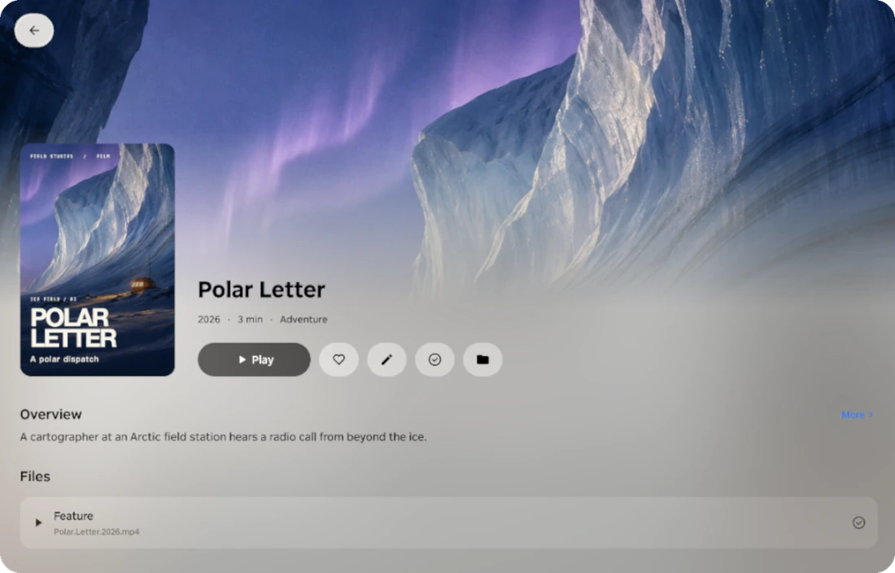
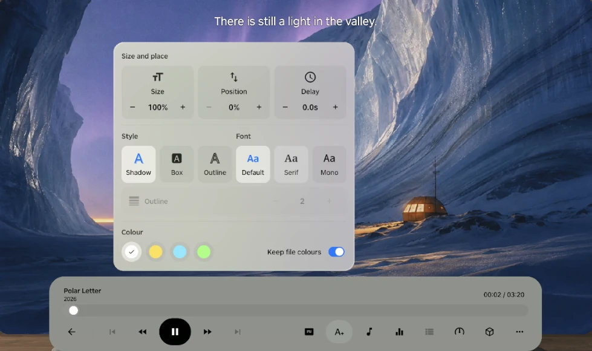

沿用整理好的资料
播放器会读取电影旁的 Kodi NFO、海报和背景图。即使断开外网，片库也可以保留原来的样子。

让自己的电影和剧集排成一面海报墙。在 PICO Space Pro 上选好座位，开场。
添加你一直在用的影视文件夹。播放器结合片名、年份、目录和相邻文件，识别电影，也把剧集排到对应的季和集。

播放器会读取电影旁的 Kodi NFO、海报和背景图。即使断开外网，片库也可以保留原来的样子。
电影和剧集可直接联网识别，无需申请数据库密钥。预览版还能核对纪录片的电视台署名，并通过多语片名识别番剧。
季度目录和集数让剧集按顺序归组。如果配错作品，改一次即可修正整组，重新扫描也会保留。
按海报找片，按类型或年代筛选。点开封面可以看演员、选集或开始播放。「继续观看」会带你回到上次停下的位置。

坐在正中央看银幕，也可以移到窗边看地球。在播放时切换影厅，或把影片放到眼前的悬浮窗口里。
全景、立体电影和原盘备份都能进入片库。影片可以保留自己的字幕、配音和音轨。
在 360° 影片里回头看身后的湖岸，在 VR180 里看眼前的空间，也可以播放左右或上下格式的立体电影。

切换配音和字幕，调整同步时间。支持带样式的 ASS/SSA 字幕，以及原盘里的 PGS、VobSub 图形字幕。
打开本地文件，或连接 SMB、WebDAV、NFS、FTP、SFTP 共享。也支持 Jellyfin、Emby、Plex 和 DLNA。
可从未加密的蓝光和 DVD 备份中打开正片，支持 ISO、BDMV 和 VIDEO_TS。
提前把影片下载到头显。回家后，可以通过自己的 SMB 共享同步观看进度、收藏和匹配修正。
把签名 APK 侧载到运行 PICO OS 6 的 PICO Space Pro。打开一个本地视频，或在「来源」中添加 NAS，即可开始。